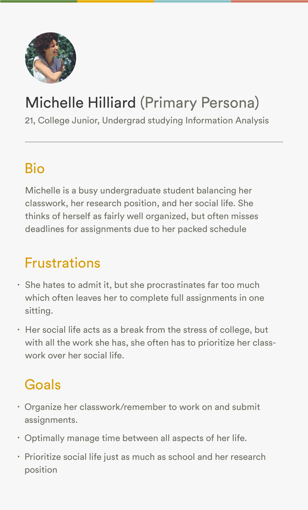

Lifework An application to make life work
Lifework is a concept project that allows me to explore problem solving and design thinking in the context of my everyday life
Interaction Design Visual Design Illustration Motion Design
Individual Project


The Project
College students and young professionals need something that keeps track of their work and social lives and organizes their time efficiently so they can live a more balanced, productive, stress-free life.The Problem
While the initial intent was to design an app that manages time spent solely on work that must be done, reflection on the idea helped me narrow down to the core purpose of the app: to balance your time between work, life, and leisure. Lifework is meant to reduce the stress associated with poor time management.
Lifework syncs with learning management platforms like Blackboard and Canvas, project management applications like Trello and Jira, and general systems such as Slack and Facebook to construct a schedule that makes efficient use of the user’s time. The primary benefit of Lifework is that is builds free time directly into the user’s schedule to help the user relax and recharge between stages of productivity.
My Role
Being a individual project, my role covers every step of the design approach, from ideation and research to design and testing.
The Process: Research
Interviews with college students and young professionals helped me identify the key pain points of their time management efforts and determine my primary user group.Interviews to Identify Key Pain Points
To start designing this application, I needed to look into the problems that people face in terms of time management. By informally interviewing 3 college students and 2 young professionals, I was able to get a better understanding of how these people attempt to manage their time and what the major pain points are in doing so. It is important to note that the convenience sampling used for interviews may result in bias due to the similarity of interviewees.
Key Findings
- College students often want time for social activities during the night, but feel they must prioritize classwork
- College students often need to balance classes and classwork with part-time jobs
- Young professionals often have trouble balancing their jobs and personal work/projects
- Young professionals often do not make meaningful use of their free time outside of their jobs due to a lack of motivation for productivity
Persona
After these interviews, I created a personas to represent my primary user group of college students. This would act as a guide for my thinking and design decisions throughout the next steps of my design approach.
The Process: Design
To effectively design a solution to reduce stress related to time management, I had to create a system for visualizing how time is used that avoided the daunting look of an average calendar layout.Wireframing
With the key findings and persona in mind, I began wireframing ideas of the general functionality of the application. I identified four main pages of the application: daily schedule, weekly schedule, event creation, and profile. These pages were essentially the minimum content and functionality that would allow the users to benefit from the app.
Visualizing Time
With these main pages in mind, the primary issue that I had to solve was creating a system for visualizing time management. I wanted to avoid the common calendar layout (similar to Google Calendar) as this can quickly become daunting as more events are added to a calendar.
While my design for the daily schedule page was a simple scrollable timeline, my design for the weekly schedule focused on a simple “mosaic” plot of how time is being used each day. Within the visualization itself, no information is given further than the event-types (free time, social, work, class, or classwork) and the times they occupy. This reduces cognitive overload by avoiding excessive information and allows the user to focus on how they are spending their time each day rather than what exact things they have planned. The user can tap an event to see more details, but this mosaic visualization focuses on time management rather than specific tasks.
Reflection
Asking Questions
Coming into the project, I found myself in a position where I had not been throughout my education or other jobs I’ve had: utter confusion. Throughout my education, I could almost always get by without admitting my confusion. I could read a textbook or wait for another student to ask the question that I had. At Merit, however, nobody was there to ask these questions for me, and randomly picking articles and documentation to read about the subject often felt like reading a foreign language. I quickly learned that I had to admit my confusion and ask questions, even about seemingly simple concepts, to ensure that I could move forward in the project.
Applying Prior Experience to New Fields
Aside from asking for help to understand the field that I was working in, I find myself in a position where I am able to explore the relationship between my experience in design with the work I am doing with internet networks and security. My work at Merit is to not only to develop applications for our AMON software, but also to ensure that what we are building offers a simple interface for people to interact with and understand the data they observe. While the concept of internet networks and security was a new field to me, the way people interact with the applications that let them explore this field ties back to all the experience I have with user experience design and human computer interaction.